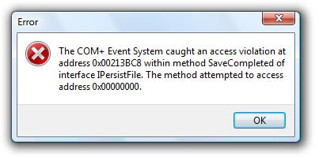
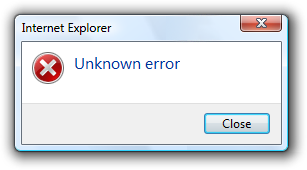
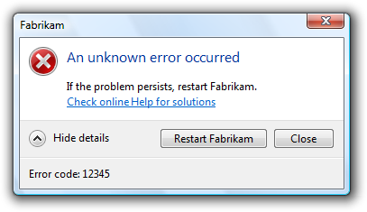
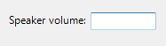
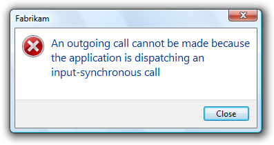
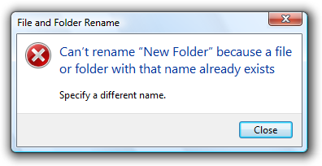

[!NOTE] This design guide was created for Windows 7 and has not been updated for newer versions of Windows. Much of the guidance still applies in principle, but the presentation and examples do not reflect our current design guidance.
Error messages in Windows 7 alert users of problems that have already occurred. In contrast, warning messages alert users of conditions that might cause problems in the future. Error messages can be presented using modal dialog boxes, in-place messages, notifications, or balloons.
A typical modal error message.
Effective error messages inform users that a problem occurred, explain why it happened, and provide a solution so users can fix the problem. Users should either perform an action or change their behavior as the result of an error message.
Well-written, helpful error messages are crucial to a quality user experience. Poorly written error messages result in low product satisfaction, and are a leading cause of avoidable technical support costs. Unnecessary error messages break users' flow.
Note: Guidelines related to dialog boxes, warning messages, confirmations, standard icons, notifications, and layout are presented in separate articles.
To decide, consider these questions:
The characteristics of poor error messages
It should be no surprise that there are many annoying, unhelpful, and poorly written error messages. And because error messages are often presented using modal dialogs, they interrupt the user's current activity and demand to be acknowledged before allowing the user to continue.
Part of the problem is that there are so many ways to do it wrong. Consider these examples from the Error Message Hall of Shame:
Unnecessary error messages
Incorrect:
This example from Windows XP might be the worst error message ever. It indicates that a program couldn't launch because Windows itself is in the process of shutting down. There is nothing the user can do about this or even wants to do about this (the user chose to shut Windows down, after all). And by displaying this error message, Windows prevents itself from shutting down!
The problem: The error message itself is the problem. Aside from dismissing the error message, there is nothing for users to do.
Leading cause: Reporting all error cases, regardless of users' goals or point of view.
Recommended alternative: Don't report errors that users don't care about.
"Success" error messages
Incorrect:
This error message resulted from the user choosing not to restart Windows immediately after program removal. The program removal was successful from the user's point of view.
The problem: There's no error from the user's point of view. Aside from dismissing the error message, there is nothing for users to do.
Leading cause: The task completed successfully from the user's point of view, but failed from the uninstall program's point of view.
Recommended alternative: Don't report errors for conditions that users consider acceptable.
Completely useless error messages
Incorrect:

Users learn that there was an error, but have no idea what the error was or what to do about it. And no, it's not OK!
The problem: The error message doesn't give a specific problem and there is nothing users can do about it.
Leading cause: Most likely, the program has poor error handling.
Recommended alternative: Design good error handling into the program.
Incomprehensible error messages
Incorrect:

In this example, the problem statement is clear, but the supplemental explanation is utterly baffling.
The problem: The problem statement or solution is incomprehensible.
Leading cause: Explaining the problem from the code's point of view instead of the user's.
Recommended alternative: Write error message text that your target users can easily understand. Provide solutions that users can actually perform. Design your program's error message experience don't have programmers compose error messages on the spot.
Error messages that overcommunicate
Incorrect:

In this example, the error message apparently attempts to explain every troubleshooting step.
The problem: Too much information.
Leading cause: Giving too many details or trying to explain a complicated troubleshooting process within an error message.
Recommended alternative: Avoid unnecessary details. Also, avoid troubleshooters. If a troubleshooter is necessary, focus on the most likely solutions and explain the remainder by linking to the appropriate topic in Help.
Unnecessarily harsh error messages
Incorrect:
The program's inability to find an object hardly sounds catastrophic. And assuming it is catastrophic, why is OK the response?
The problem: The program's tone is unnecessarily harsh or dramatic.
Leading cause: The problem is due to a bug that appears catastrophic from the program's point of view.
Recommended alternative: Choose language carefully based on the user's point of view.
Error messages that blame users
Incorrect:

Why make users feel like a criminal?
The problem: The error message is phrased in a way that accuses the user of making an error.
Leading cause: Insensitive phrasing that focuses on the user's behavior instead of the problem.
Recommended alternative: Focus on the problem, not the user action that led to the problem, using the passive voice as necessary.
Silly error messages
Incorrect:
In this example, the problem statement is quite ironic and no solutions are provided.
The problem: Error message statements that are silly or non-sequitors.
Leading cause: Creating error messages without paying attention to their context.
Recommended alternative: Have your error messages crafted and reviewed by a writer. Consider the context and the user's state of mind when reviewing the errors.
Programmer error messages
Incorrect:

In this example, the error message indicates that there is a bug in the program. This error message has meaning only to the programmer.
The problem: Messages intended to help the program's developers find bugs are left in the release version of the program. These error messages have no meaning or value to users.
Leading cause: Programmers using normal UI to make messages to themselves.
Recommended alternative: Developers must conditionally compile all such messages so that they are automatically removed from the release version of a product. Don't waste time trying to make errors like this comprehensible to users because their only audience is the programmers.
Poorly presented error messages
Incorrect:

This example has many common presentation mistakes.
The problem: Getting all the details wrong in the error message presentation.
Leading cause: Not knowing and applying the error message guidelines. Not using writers and editors to create and review the error messages.
The nature of error handling is such that many of these mistakes are very easy to make. It's disturbing to realize that most error messages could be nominees for the Hall of Shame.
The characteristics of good error messages
In contrast to the previous bad examples, good error messages have:
Additionally, good error messages are presented in a way that is:
By designing your error handling experience to have these characteristics, you can keep your program's error messages out of the Error Message Hall of Shame.
Avoiding unnecessary error messages
Often the best error message is no error message. Many errors can be avoided through better design, and there are often better alternatives to error messages. It's usually better to prevent an error than to report one.
The most obvious error messages to avoid are those that aren't actionable. If users are likely to dismiss the message without doing or changing anything, omit the error message.
Some error messages can be eliminated because they aren't problems from the user's point of view. For example, suppose the user tried to delete a file that is already in the process of being deleted. While this might be an unexpected case from the code's point of view, users don't consider this an error because their desired outcome is achieved.
Incorrect:

This error message should be eliminated because the action was successful from the user's point of view.
For another example, suppose the user explicitly cancels a task. For the user's point of view, the following condition isn't an error.
Incorrect:
This error message should also be eliminated because the action was successful from the user's point of view.
Sometimes error messages can be eliminated by focusing on users' goals instead of the technology. In doing so, reconsider what an error really is. Is the problem with the user's goals, or with your program's ability to satisfy them? If the user's action makes sense in the real world, it should make sense in software too.
For example, suppose within an e-commerce program a user tries to find a product using search, but the literal search query has no matches and the desired product is out of stock. Technically, this is an error, but instead of giving an error message, the program could:
As long as the user's request is reasonable, a well designed e-commerce program should return reasonable results not errors.
Another great way to avoid error messages is by preventing problems in the first place. You can prevent errors by:
Providing necessary error messages
Sometimes you really do need to provide an error message. Users make mistakes, networks and devices stop working, objects can't be found or modified, tasks can't be completed, and programs have bugs. Ideally, these problems would happen less often for example, we can design our software to prevent many types of user mistakes but it isn't realistic to prevent all of these problems. And when one of these problems does happen, a helpful error message gets users back on their feet quickly.
A common belief is that error messages are the worst user experience and should be avoided at all costs, but it is more accurate to say that user confusion is the worst experience and should be avoided at all costs. Sometimes that cost is a helpful error message.
Consider disabled controls. Most of the time, it is obvious why a control is disabled, so disabling the control is a great way to avoid an error message. However, what if the reason a control is disabled isn't obvious? The user can't proceed and there is no feedback to determine the problem. Now the user is stuck and either has to deduce the problem or get technical support. In such cases, it's much better to leave the control enabled and give a helpful error message instead.
Incorrect:
Why is the Next button disabled here? Better to leave it enabled and avoid user confusion by giving a helpful error message.
If you aren't sure whether you should give an error message, start by composing the error message that you might give. If users are likely either to perform an action or to change their behavior as a result, provide the error message. By contrast, if users are likely to dismiss the message without doing or changing anything, omit the error message.
Designing for good error handling
While crafting good error message text can be challenging, sometimes it is impossible without good error handling support from the program. Consider this error message:
Incorrect:

Chances are, the problem really is unknown because the program's error handling support is lacking.
While it's possible that this is a very poorly written error message, it more likely reflects the lack of good error handling by the underlying code there is no specific information known about the problem.
In order to create specific, actionable, user-centered error messages, your program's error handling code must provide specific, high-level error information:
Good error messages aren't just a UI problem, they are a software design problem. A good error message experience isn't something that can be tacked on later.
Troubleshooting (and how to avoid it)
Troubleshooting results when a problem with several different causes is reported with a single error message.
Incorrect:

Correct:

Troubleshooting results when several problems are reported with a single error message.
In the following example, an item couldn't be moved because it was already moved or deleted, or access was denied. If the program can easily determine the cause, why put the burden on the user to determine the specific cause?
Incorrect:
Well, which is it? Now the user has to troubleshoot.
The program can determine if access was denied, so this problem should be reported with a specific error message.
Correct:

With a specific cause, no troubleshooting is required.
Use messages with multiple causes only when the specific cause cannot be determined. In this example, it would be difficult for the program to determine if the item was moved or deleted, so a single error message with multiple causes might be used here. However, it's unlikely that users are going to care if, for example, they couldn't move a deleted file. For these causes, the error message isn't even necessary.
Handling unknown errors
In some cases, you genuinely won't know the problem, cause, or the solution. If it would be unwise to suppress the error, it is better to be up front about the lack of information than to present problems, causes, or solutions that might not be right.
For example, if your program has an unhandled exception, the following error message is suitable:

If you can't suppress an unknown error, it is better to be up front about the lack of information.
On the other hand, do provide specific, actionable information if it is likely to be helpful most of the time.

This error message is suitable for an unknown error if network connectivity is usually the problem.
Determine the appropriate message type
Some issues can be presented as an error, warning, or information, depending on the emphasis and phrasing. For example, suppose a Web page cannot load an unsigned ActiveX control based on the current Windows Internet Explorer configuration:
To determine the appropriate message type, focus on the most important aspect of the issue that users need to know or act upon. Typically, if an issue blocks the user from proceeding, you should present it as an error; if the user can proceed, present it as a warning. Craft the main instruction or other corresponding text based on that focus, then choose an icon (standard or otherwise) that matches the text. The main instruction text and icons should always match.
Error message presentation
Most error messages in Windows programs are presented using modal dialog boxes (as are most examples in this article), but there are other options:
Putting error messages in modal dialog boxes has the benefit of demanding the user's immediate attention and acknowledgement. However, this is also their primary drawback if that attention isn't necessary.
Do you really need to interrupt users so that they can click the Close button? If not, consider alternatives to using a modal dialog box.
Modal dialogs are a great choice when the user must acknowledge the problem immediately before continuing, but often a poor choice otherwise. Generally, you should prefer to use the lightest weight presentation that does the job well.
Avoid overcommunicating
Generally, users don't read, they scan. The more text there is, the harder the text is to scan, and the more likely users won't read the text at all. As a result, it is important to reduce the text down to its essentials, and use progressive disclosure and Help links when necessary to provide additional information.
There are many extreme examples, but let's look at one more typical. The following example has most of the attributes of a good error message, but its text isn't concise and requires motivation to read.
Incorrect:
This example is a good error message, but it overcommunicates.
What is all this text really saying? Something like this:
Correct:
This error message has essentially the same information, but is far more concise.
By using Help to provide the details, this error message has an inverted pyramid style of presentation.
For more guidelines and examples on overcommunicating, see User Interface Text.
If you do only eight things
Usage patterns
Error messages have several usage patterns:
| Label | Value |
|---|---|
| System problems The operating system, hardware device, network, or program has failed or is not in the state required to perform a task. | Many system problems can be solved by the user: Device problems can be solved by turning the device on, reconnecting the device, and inserting media.Network problems can be solved by checking the physical network connect, and running Network diagnose and repair.Program problems can be solved by changing program options or restarting the program. In this example, the program can't find a camera to perform a user task. In this example, a feature required to perform a task needs to be turned on. |
| File problems A file or folder required for a task initiated by the user was not found, is already in use, or doesn't have the expected format. | In this example, the file or folder can't be deleted because it wasn't found. In this example, the program doesn't support the given file format. |
| Security problems The user doesn't have permission to access a resource, or sufficient privilege to perform a task initiated by the user. | In this example, the user doesn't have permission to access a resource. In this example, the user doesn't have the privilege to perform a task. |
| Task problems There is a specific problem performing a task initiated by the user (other than a system, file not found, file format, or security problem). | In this example, the Clipboard data can't be pasted into Paint. In this example, the user can't install a software upgrade. |
| User input problems The user entered a value that is incorrect or inconsistent with other user input. | In this example, the user entered an incorrect time value. In this example, user input is not in the correct format. |
Incorrect:

In this example, an unconstrained text box is used for constrained input. Use a slider instead.
In this example, a balloon indicates an input problem while still in the control.

In this example, an in-place error is used for an error found by clicking the commit button.
Modal error message dialogs don't have title bar icons. Title bar icons are used as a visual distinction between primary windows and secondary windows.
Use an error icon. Exceptions:
If the error is a user input problem displayed using a modal dialog box or balloon, don't use an icon. Doing so is counter to the encouraging tone of Windows. However, in-place error messages should use a small error icon (16x16 pixel) to clearly identify them as error messages.


In these examples, user input problems don't need error icons.
In this example, an in-place error message needs a small error icon to clearly identify it as an error message.
If the problem is for a feature that has an icon (and not a user input problem), you can use the feature icon with an error overlay. If you do this, also use the feature name as the error's subject.

In this example, the feature icon has an error overlay, and the feature is the subject of the error.
Don't use warning icons for errors. This is often done to make the presentation feel less severe. Errors aren't warnings.
Incorrect:

In this example, a warning icon is incorrectly used to make the error feel less severe.
For more guidelines and examples, see Standard Icons.
In this example, the progressive disclosure button helps users drill down to more detail if they want it, or simplify the UI if they don't.
For labeling guidelines, see Progressive Disclosure Controls.
Don't show this message again
For more guidelines, see Dialog Boxes.
For more guidelines, see Help.
Incorrect:

In this example, an error code is used as a substitute for a solution text.
Correct:
1234
0xC0001234
Incorrect:
-1
-67113524
<error code>.
In this example, an error code is used to supplement an error message that can benefit from further information.
General
Incorrect:

Correct:

In these examples, the correct version speaks the user's language whereas the incorrect version is overly technical.
These terms are unnecessary and contrary to the encouraging tone of Windows. When used correctly, the error icon sufficiently communicates that there is a problem.
Incorrect:
Correct:

In the incorrect example, the terms "catastrophic" and "failure" are unnecessary.
Incorrect:

Correct:

The incorrect example blames the user by using the active voice.
Incorrect:
File not found.
Disk is full.
Value out of range.
Character is invalid.
Device not available.
These problems would be much easier to solve with specific names, locations, and values.
Correct:
Please wait while Windows copies the files to your computer.
Correct:
We're sorry, but Fabrikam Backup detected an unrecoverable problem and was shut down to protect files on your computer.
Incorrect:

Correct:

In the incorrect example, full product names and trademark symbols are used.
Correct:

In this example, the error message would be confusing if the object name weren't in quotation marks.
For more guidelines and examples, see Style and Tone.
Titles
Incorrect:

In this example, the title is being incorrectly used to explain the problem.
Main instructions
Incorrect:

In this example, the entire error message is put in the main instruction, making it hard to read.
In this example, only the file name is in the main instruction. The full path is in the supplemental instruction.

In this example, the user is renaming a file from Windows Explorer. In this case, the full file path isn't needed because it's obvious from the context.
Main instruction templates
While there are no strict rules for phrasing, try using the following main instruction templates whenever possible:
Of course, make changes as needed for the main instruction to be grammatically correct and comply with the main instruction guidelines.
Supplemental instructions
Incorrect:

In this example, while the problem and its recommended solution are possible, they are very unlikely.

In this example, no supplemental instruction is necessary; the solution can be trivially deduced from the problem statement.
Correct:
To restart Windows, click OK.
Incorrect:
Click OK to restart Windows.
In the incorrect example, users are more likely to click OK by accident.
Incorrect:

In this example, most likely the problem is with the user's network connection, so it's not worth contacting an administrator.
Incorrect:
In this example, the error message incorrectly recommends contacting technical support.
Commit buttons
When referring to errors:
Example: If you receive a There is no CD disc in the drive message, insert a new CD disc in the drive and try again.